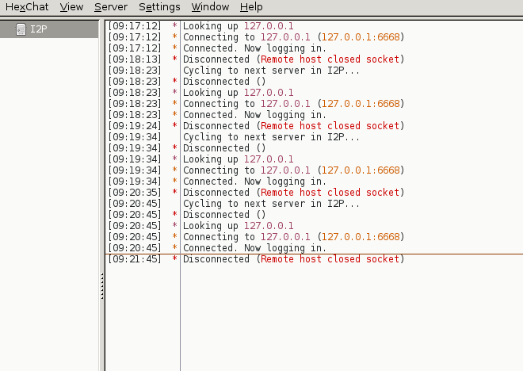

It would be nice to have but my focus is on the Install package, sorry but i got enough on my plate atm so either someone else does it or wait until whonix-i2p is ready.
It’s on my list though… 
3 Likes
My opinion is that Tor is the better choice for Sdwdate. Tor has more hosted services, more diverse sysops, and latency isn’t much of an issue. I2P isn’t very strong yet when it comes to web hosting.
4 Likes
Right, the only reason i can think of for Sdwdate with I2P would be if Tor is blocked or as a fallback if Tor fails (for whatever reason).
It wouldn’t hurt to have this failsafe with I2P but the “Cost” outweighs the Benefit atm…
4 Likes
@9jnc7 thats bad to use other networks to secure ur network while u can have that benefit from ur own network. so using Tor for I2P sake inside a distro for I2P i find it not really good thing. Tor has its own disadvantages like it can be blocked and many countries done that while I2P its harder to block (though it can be blocked) but until now no country blocked it afik. So time configurations should be with I2P to avoid time attacks on I2P.
not necessarily, it can be a benefit to use a second anonymity network for “less secure” tasks, that’s why we disable Outproxies, we don’t need to use an inferior Network for clearnet browsing, we use Tor for that since it performs better than I2P atm.
the current goal is not to create a I2P Whonix Version, we want to have both Tor and I2P first. a I2P only Whonix version would come probably after that, but i see more benefits in the first Version.
Tor has clear advantages in a few areas.
why would you not use them ?
Yes Tor has also disadvantages, but there is no reason in disabling it by default, we can have I2P as fallback for the Services we use with Tor. China is blocking I2P, there are People on the I2PForum confirming this.
only if Tor is blocked, or once we got an I2P only Version.
feel free to help with that, as i stated above i’m currently in no position to test much. so it will take a few days…
who said i want to disable Tor? i want to have time synced with I2P but not disabling Tor.
who said i wont? 
who said Tor should be disabled by default?
ah good to know that china achieved it. (then soon so as Russia)
I must have read more into your Post then you meant, i’m sorry for that.
It’s still a lower priority task for me to integrate I2P into sdwdate. If you want to do it feel free to do so.
3 Likes
Short Update:
I finally got my new Hardware today.
I’m in the process of restoring everything now.
I’ve found that the first step (importing gpg and adding the repo) isn’t working anymore (because of qubes update proxy), the easiest fix would be to only add the buster repo instead of the i2p one.
More Updates to come…
3 Likes
Awesome and Welcome back
1 Like
Did Tails manage to rebrand Tor Browser without recompiling it? Could quite likely be the case.
https://git-tails.immerda.ch/tails/plain/config/chroot_local-includes/usr/local/lib/tails-shell-library/chroot-browser.sh mentions branding. That source file regarding Tails Unsafe Browser and links to other related files can be found here:
2 Likes
Pretty interesting script. It’ll take some dissection, but I’ll be able to use it.
1 Like
@Goldstein why would you install i2p-keyring in GW if you are installing it from buster repos? (because the package not there)
i think you maybe copy/paste the old command, just fix it in github.
also there is no more iceweasel in debian , all firefox.
Issues
- Cant browse .onion websites
- Hexchat need to be modified (or using the default one) as I2P is not Socks:
- No connection to irc what so ever:

- Cant browse any .i2p link, just not connecting.
{kind=link}
{kind=link}
{kind=link}
Conclusion
the concept seems nice, but nothing working on reality.
Im really excited to see more.
1 Like
old c/p forgot to delete that.
fixed
iceweasel is still there ( sudo apt-cache search iceweasel | grep browser ) but i deleted it too just for you 
Right this is supposed to be blocked… we had a discussion about that some time ago. To use Tor use the default TBB
i didn’t test irc, but should be easy to fix (lower priority tough)
Please post your logs :
sudo tail -f /var/log/i2p/log-router-0.txt
&
sudo tail -f /var/log/i2p/wrapper.log
Right it’s a nice concept, a concept that needs a lot of work and time. I can only work on this in my spare time, which isn’t much (as you can tell by the lack of progress) because i also need to take time for my family and friends. I almost lost everything recently, because of that i have to take a step back and take care of the important things first. I hope you (all) understand this and would act like me in this situation.
I’m still working on it, it’s just slow atm.
Patience please
TLDR:
It’s going to work, but it needs time or more People to do it…
Me too, but i would be more excited to see more People working on it.

2 Likes
Thanks @goldstein-otg. Take your time there is no rush.
@TNT_BOM_BOM while we appreciate your enthusiasm it would be polite to be patient for progress updates. Bumping threads regularly won’t convince anyone that your problem is the most important priority. If anything it will annoy people.
1 Like
yeah and when you install it , it will show FF (which is weird  )
)
i see, then using Tor Browser for only security focus will give the better choice for this case.
 later task
later task
Sure Tyt. just wanted to notify you about the current situation of Whonix-I2P so next time you are you just jump to fix them. no need to test everything by yourself
1 Like
actually i wasnt able to browse anything except the clearnet websites, so that was big issue.
just helping the idea through testing it and report feedback, not sure it is annoying.
Thank you for your patience, i appreciate it. It does bother me a lot that i haven’t done much progress lately and that this project is going on for all that time without reaching a Milestone.
I don’t mind it,quite the opposite i do appreciate Feedback from anyone, everything helps.
The only thing i wouldn’t like to see here are demands to do stuff.
that’s why i used it
yes, parts of it at least
Thanks i know that, your post was constructive and helpful.
i think i know why your Router fails but i need to see the log to confirm that.
It’s probably a wrong/missing config in the clients.config or router.config, which i haven’t fixed yet.
I’ll upload my working config files tomorrow, so you can compare it with yours.
1 Like
Thanks for your efforts, @goldstein-otg. Take whatever time you need. If you have any questions about things, I might be able to point you in the right direction.
1 Like
As far as my own progress, I’ve almost got the browser ready, I just haven’t had time to thoroughly test it on a Whonix-I2P system yet. I don’t think it is, but I want to make absolutely sure that running it isn’t dependent on some artifact on my laptop. I’ve been swamped at my day jobs, and my Qubes-Whonix box is at home. I’ve got some time off starting Monday where I plan to set it up properly, then once I’m satisfied I’ll send it up.
2 Likes
- log-router-0.txt and log-router-1.txt
user@host:~$ sudo tail -f /var/log/i2p/log-router-0.txt
at net.i2p.router.transport.CommSystemFacadeImpl.startup(CommSystemFacadeImpl.java:63)
at net.i2p.router.startup.BootCommSystemJob.runJob(BootCommSystemJob.java:44)
at net.i2p.router.JobQueueRunner.runCurrentJob(JobQueueRunner.java:135)
at net.i2p.router.JobQueueRunner.run(JobQueueRunner.java:78)
10/1/18 7:51:46 PM ERROR [JobQueue 1/1] p.router.transport.UPnPManager: UPnP start failed - port conflict?
10/1/18 7:51:47 PM INFO [JobQueue 1/1] ter.transport.udp.UDPTransport: UDP selected random port 27983
10/1/18 7:51:49 PM ERROR [JobQueue 1/1] p.router.transport.UPnPManager: UPnP start failed - port conflict?
10/1/18 7:51:54 PM WARN [Timestamper ] .router.time.RouterTimestamper: Unable to reach any of the NTP servers [0.us.pool.ntp.org, 1.us.pool.ntp.org, 2.us.pool.ntp.org, 0.north-america.pool.ntp.org, 1.north-america.pool.ntp.org, 2.north-america.pool.ntp.org, 0.pool.ntp.org, 1.pool.ntp.org, 2.pool.ntp.org] - network disconnected? Or set time.sntpServerList=myserver1.com,myserver2.com in advanced configuration.
10/1/18 7:53:49 PM ERROR [leTimer2 2/4] p.router.transport.UPnPManager: UPnP start failed - port conflict?
10/1/18 7:55:49 PM ^^^ 1 similar message omitted ^^^
^C
user@host:~$ sudo tail -f /var/log/i2p/log-router-1.txt
10/1/18 7:14:48 PM WARN [Timestamper ] .router.time.RouterTimestamper: Unable to reach any of the NTP servers [0.us.pool.ntp.org, 1.us.pool.ntp.org, 2.us.pool.ntp.org, 0.north-america.pool.ntp.org, 1.north-america.pool.ntp.org, 2.north-america.pool.ntp.org, 0.pool.ntp.org, 1.pool.ntp.org, 2.pool.ntp.org] - network disconnected? Or set time.sntpServerList=myserver1.com,myserver2.com in advanced configuration.
10/1/18 7:14:34 PM WARN [P reader 2/4] rt.ntcp.OutboundEstablishState: NTP failure, NTCP adjusting clock by 38s
10/1/18 7:23:33 PM CRIT [r 1 shutdown] net.i2p.router.Router : Shutting down the router…
10/1/18 7:23:33 PM CRIT [r 1 shutdown] net.i2p.router.Router : Starting final shutdown(3)
10/1/18 7:23:34 PM CRIT [r 1 shutdown] net.i2p.router.Router : Shutdown(3) complete
^C
user@host:~$
- wrapper.log
user@host:~$ sudo tail -f /var/log/i2p/wrapper.log 2018/10/01 19:52:13 | at sun.reflect.NativeConstructorAccessorImpl.newInstance0(Native Method) 2018/10/01 19:52:13 | at sun.reflect.NativeConstructorAccessorImpl.newInstance(NativeConstructorAccessorImpl.java:62) 2018/10/01 19:52:13 | at sun.reflect.DelegatingConstructorAccessorImpl.newInstance(DelegatingConstructorAccessorImpl.java:45) 2018/10/01 19:52:13 | at java.lang.reflect.Constructor.newInstance(Constructor.java:423) 2018/10/01 19:52:13 | at net.i2p.router.startup.LoadClientAppsJob$RunApp.run(LoadClientAppsJob.java:281) 2018/10/01 19:52:13 | at java.lang.Thread.run(Thread.java:748) 2018/10/01 19:52:13 | at net.i2p.util.I2PThread.run(I2PThread.java:103) 2018/10/01 19:52:13 | Caused by: java.lang.IllegalArgumentException: Bad RouterConsoleRunner arguments, check clientApp.0.args in your clients.config file! Usage: [[port host[,host]] [-s sslPort [host[,host]]] [webAppsDir]] 2018/10/01 19:52:13 | at net.i2p.router.web.RouterConsoleRunner.<init>(RouterConsoleRunner.java:199) 2018/10/01 19:52:13 | ... 7 more ^C user@host:~$
- I2P websites doesnt work:
{kind=link}